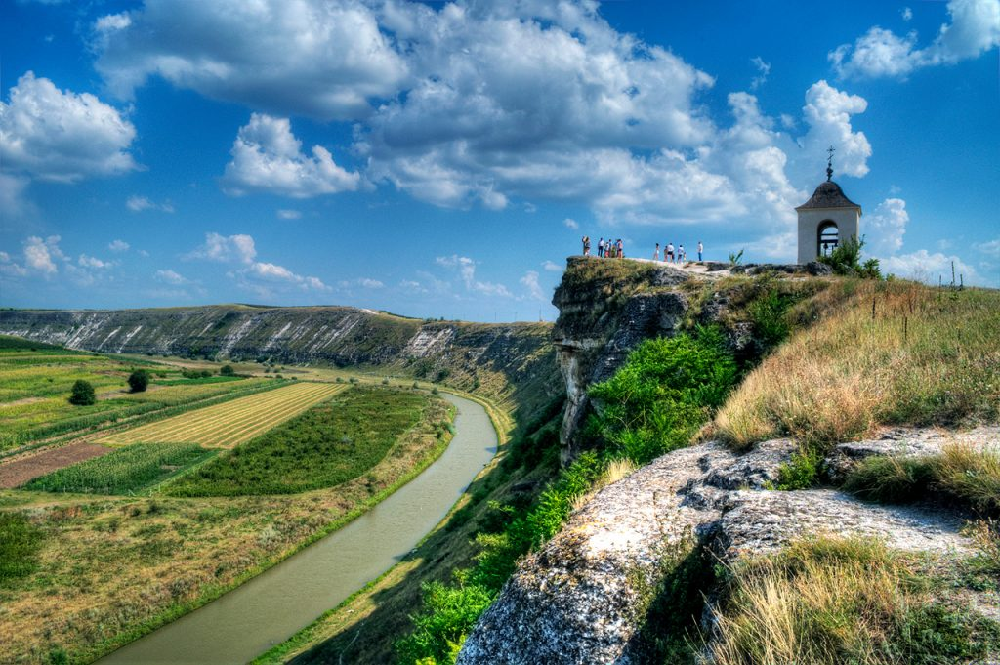
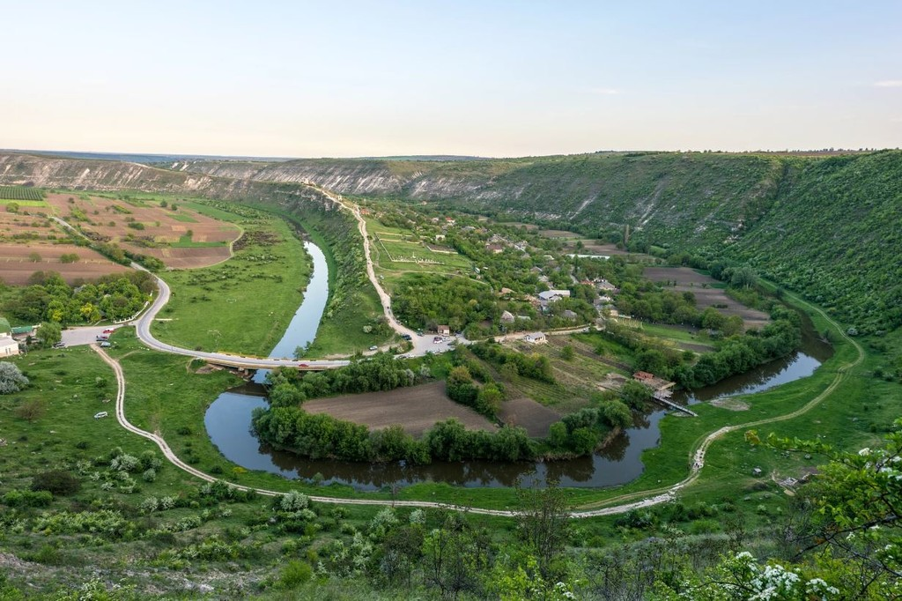
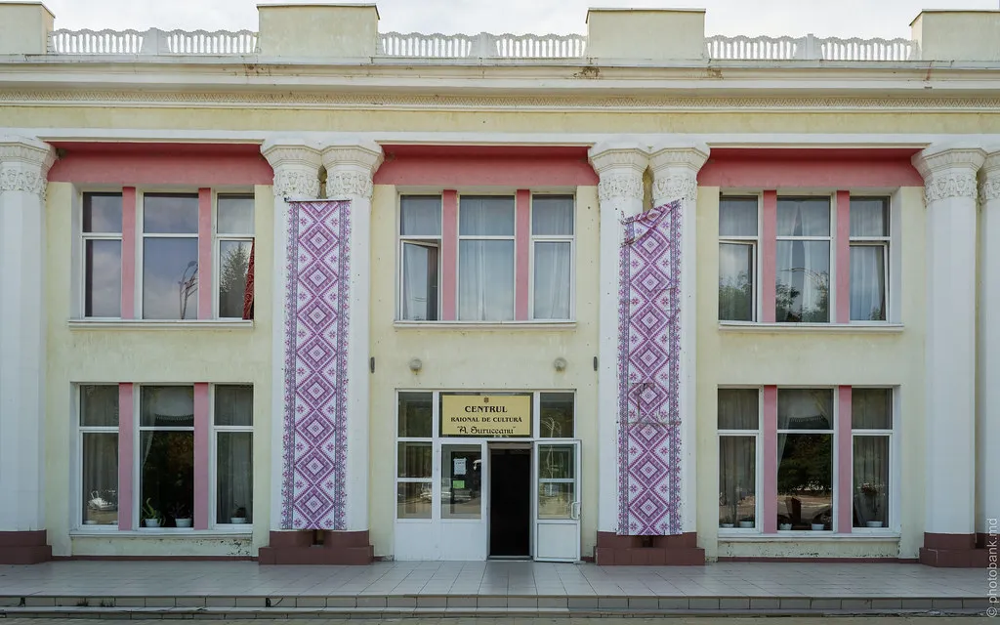
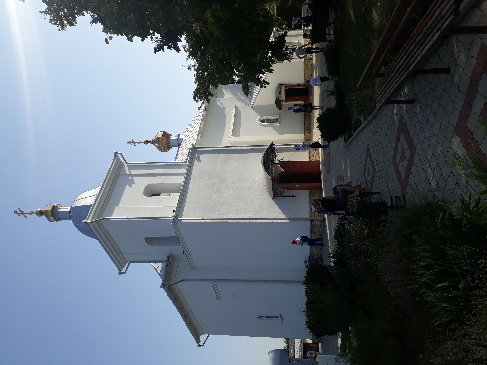
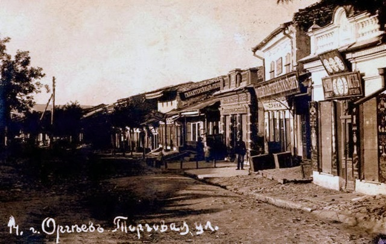

Atracțiile Orheiului
Locuri care merită vizitate, amintiri care rămân pe viață
Un Oraș, O Mie de Povești
Orhei oferă vizitatorilor o experiență turistică completă — de la situri arheologice de importanță europeană la mănăstiri spectaculoase, de la peisaje naturale de basm la o gastronomie locală autentică.
Fiecare vizită la Orhei este o călătorie în timp — înainte cu câteva secole, pe urmele dacilor, moldovenilor medievali și ale călugarilor rupestri.

Complexul Orheiul Vechi
Orheiul Vechi este cel mai important sit muzeo-rezervație din Republica Moldova — un loc unde civilizațiile și-au lăsat amprenta de mii de ani, în straturi de cultură și credință.
Situated pe o peninsulă dramatică înconjurată de meandrul Răutului, complexul îmbină vestigii din mai multe epoci: urmele cetății geto-dacice, construcțiile medievale tătaro-mongole, baia turcă din sec. XIII–XIV și mănăstirea rupestră ortodoxă din sec. XVI.
- ⛏️Mănăstire rupestră săpată în stâncă (sec. XIII–XIV)
- 🏰Cetate medievală cu turnuri de apărare
- 🏺Muzeu de arheologie cu exponate rare
- 🥾Trasee turistice marcate în natură
- 📸Priveliști panoramice spectaculoase

Mănăstirea Curchi
Unul dintre cele mai grandioase și bine conservate ansambluri monastice din Moldova. Situată în mijlocul unei păduri de fag, la aproximativ 12 km de Orhei, mănăstirea îți taie respirația prin măreția ei.
Fondată în 1773 și renovată major între 1835–1868, mănăstirea reunește mai multe biserici în stil neoclasic și baroc rusesc, cu picturi murale valoroase și decoruri interioare bogate. Este un loc activ de viață monahală și pelerinaj religios.
- 🏛️Arhitectură neoclasică și baroc rusesc impresionantă
- 🎨Picturi murale și icoane valoroase
- 🌲Pădure de fag cu sentiere de meditație
- 🕯️Slujbe religioase deschise vizitatorilor

Râul Răut & Peisajul Natural
Râul Răut, cel mai lung afluent al Nistrului (~286 km), este sufletul natural al ținutului orheian. Meandrul spectaculos din zona Orheiului Vechi creează una dintre cele mai frumoase priveliști din Moldova.
Stâncile calcaroase înalte de pe maluri, acoperite cu vegetație rară, adăpostesc colonii de lăstuni și reprezintă un ecosistem unic. Văile fertile de pe malul opus, cu sate pictorești, completează tabloul unui peisaj de poveste.
- 🥾Drumeții pe traseele marcate de pe maluri
- 🦅Observarea păsărilor rare și a faunei locale
- 🎣Pescuit sportiv în apele cristaline
- 📷Fotografie de natură și peisaj
- 🚣Turism nautic pe cursul liniștit al râului

Cultură & Viață Locală
Orhei dispune de o infrastructură culturală activă și diversă, reflectând spiritul moldovenesc autentic. Casa de Cultură „Nicolae Sulac", Muzeul de Istorie și Etnografie și centralele biblioteci sunt inima vieții intelectuale locale.
Pe tot parcursul anului, orașul găzduiește festivaluri de folclor, expoziții de artă plastică, concerte, spectacole de teatru și evenimente comunitare care păstrează tradițiile vii și animă viața urbană.
- 🏛️Casa de Cultură „Nicolae Sulac"
- 🏺Muzeul de Istorie și Etnografie Orhei
- 🎪Festivaluri anuale de folclor și tradiții
- 🎨Galerii de artă și ateliere artizanale
Și Altele…

Biserica Sf. Dumitru
Monument de arhitectură din sec. XIX, cu elemente neoclasice și iconostas valoros. Situată în centrul vechi al orașului.
Turnul de Apă (sec. XIX)
Construcție tehnică de epocă, devenită simbol al orașului. Restaurat recent, oferă o priveliște panoramică asupra Orheiului.

Centrul Vechi al Orașului
Clădiri cu arhitectură de epocă, piața centrală animată, cafenele și restaurante cu specific local, atmosferă unică moldovenească.
Cum să Vizitezi Orhei
🚗 Cum Ajungi
Autobuze frecvente din Chișinău (Stația Centrală), călătorie ~1 oră
Traseul M2 (Chișinău–Bălți), ~40 km nord. Parcare disponibilă în centru
~30–40 min din Chișinău, tarif estimativ 150–200 MDL
🕐 Program Atracții
Zilnic 09:00–18:00 (mai–oct), 10:00–16:00 (nov–apr)
Zilnic 07:00–20:00, slujbe la 08:00 și 17:00
Mar–Dum 09:00–17:00, Lun — închis